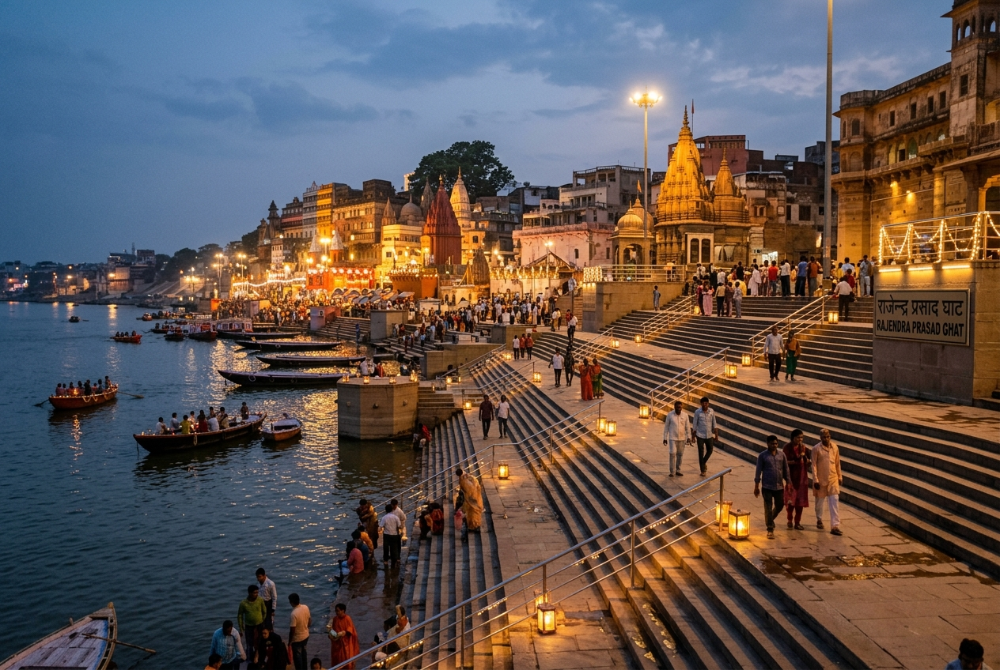
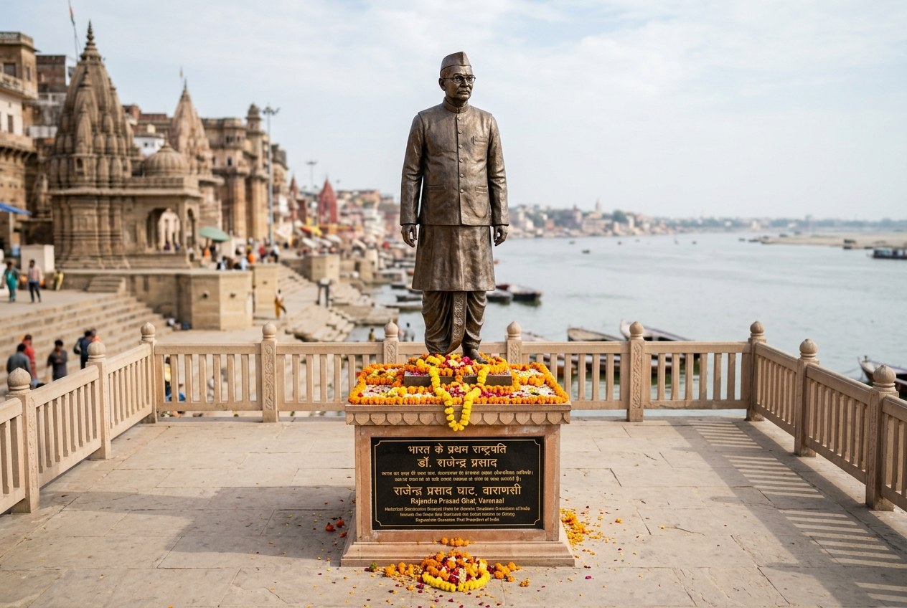
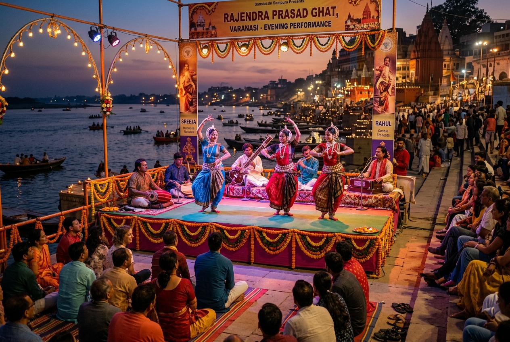

Rajendra Prasad Ghat
A Modern Chapter in Varanasi's Riverfront
Connecting Kashi's ancient spiritual heritage with modern Indian history, Rajendra Prasad Ghat is a prominent riverfront named in honor of Dr. Rajendra Prasad, India's first President. Boasting wide stone platforms and a majestic view of the Ganga's crescent curve, it serves as a central hub for cultural events, evening prayers, and river boat journeys.
📜 Ghat History & Name Significance
Originally Ghoda Ghat
Historically, this ghat was an extension of the famous Dashashwamedh Ghat. It was originally known as Ghoda Ghat (Horse Ghat) because it served as a station for bathing and trading horses during royal processions and military movements in the medieval and Maratha periods.
Renaming in 1979
In 1979, the Municipal Corporation of Varanasi officially renamed the ghat in honor of Dr. Rajendra Prasad. To commemorate the renaming, a dedicated stone memorial and a life-sized statue of the first President were erected at the center of the ghat's main platform.
Renovation of 1984
Understanding its central location and growing prominence, the Bihar Government undertook a major reconstruction effort in 1984, transforming the steps into a spacious concrete and sandstone structure capable of hosting large gatherings.
🇮🇳 Connection with Dr. Rajendra Prasad
India's First President
Dr. Rajendra Prasad (1884–1963) was a key leader of the Indian Independence Movement, a close associate of Mahatma Gandhi, and the President of the Constituent Assembly that drafted India's Constitution, before serving as the first President of the Republic.
Personal Link to Varanasi
Dr. Rajendra Prasad had a deep love for Kashi's scholarly and spiritual traditions. During his national service and later retirement years, he frequently visited Varanasi to meet with pandits, promote traditional education, and spend quiet days along the riverbank.
A Modern National Symbol
The naming of the ghat stands as a symbol of modern democratic India's respect for national leaders, weaving their memory directly into the fabric of one of the world's oldest living cultural centers.
🏛️ Riverfront Architecture & Setting
The Statue & Plaza
At the heart of the ghat lies an elevated stone plaza featuring a dignified bronze/clay statue of Dr. Rajendra Prasad, adorned with marigold garlands. The plaza acts as a modern viewing deck, offering visitors an open, clear panoramic view of the Ganga curve.
Broad Stone Platforms
Unlike some of the narrower historic ghats, Rajendra Prasad Ghat features exceptionally broad, flat stone steps (pucca steps) and platforms. This spacious design makes it highly functional and safe for large tourist groups and cultural stages.
🎭 Cultural & Religious Activities
- Vocal & Dance Recitals: The open platforms host regular evening performances of Hindustani classical music, traditional dance, and plays celebrating national and local heritage.
- Ganga Aarti Viewing: Being situated next to Dashashwamedh Ghat, it serves as a popular, less congested spot for viewing the world-famous evening Ganga Aarti.
- Boating & Cruises: The ghat is a major boarding point for traditional rowboats, motorboats, and luxury Ganga cruises, carrying passengers to different parts of the city.
🛕 Nearby Heritage & Connections
- Dashashwamedh Ghat: Located immediately adjacent to the south, it is Kashi's central, busiest ghat, famous for the daily evening Aarti.
- Man Mandir Ghat: Located just to the north, notable for its beautiful 17th-century observatory built by Maharaja Sawai Jai Singh II of Jaipur.
- Shitala Ghat: A small historic ghat sitting right between Rajendra Prasad and Dashashwamedh ghats, dedicated to Goddess Shitala.
📅 Historical Timeline
Ghoda Ghat Era
Originally functioned as an extension of Dashashwamedh Ghat, primarily utilized as a station for trading and bathing horses during military and royal movements.
Renaming & Memorial Plaque
Renamed after Dr. Rajendra Prasad, India's first President. The central plaza and statue were planned to honor his contributions to the nation.
Concrete Reconstruction
The Government of Bihar funded and completed the modern concrete steps and sandstone platforms, creating the current spacious architecture.
Vibrant Cultural Stage
Now stands as Kashi's central venue for national celebrations, classical music performances, and the boarding terminal for river cruises.
💡 Interesting Facts About the Ghat
- A President's Retreat: Dr. Rajendra Prasad used to spend hours meditating along Kashi's banks during his visits, seeking peace from state affairs.
- Spacious Design: It has some of the widest steps on Varanasi's riverfront, making it the preferred location for filming and large public gatherings.
- Adjacent Blessings: Visitors can view both the Dashashwamedh Aarti and Scindia Ghat lights simultaneously from this central platform.
- Bihar State Sponsorship: It is one of the few ghats in Varanasi whose modern restoration was sponsored and constructed by a neighboring state government.
- Cruise Gateway: It is the primary terminal where travelers board modern electric catamarans and heritage cruises.
- Marigold Garland Plaque: The statue of Dr. Rajendra Prasad is decorated daily with marigolds, reflecting the local temple tradition.
Visual Heritage Gallery

Rajendra Prasad Ghat Evening
The illuminated stone steps and wide platform hosting visitors at twilight.

Dr. Rajendra Prasad Statue
The central memorial statue honoring India's first President overlooking the Ganga.

Spacious Platforms
The modern, clean architectural layout designed to accommodate large public gatherings.

Cultural Event Stage
An evening classical performance held on the open-air stage facing the river.